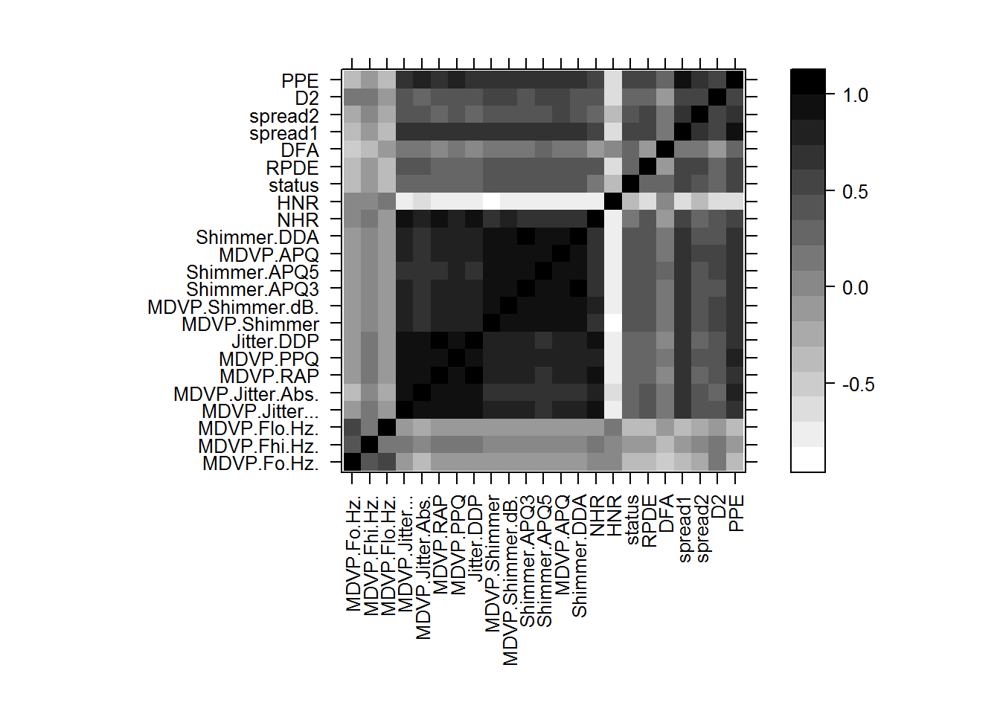
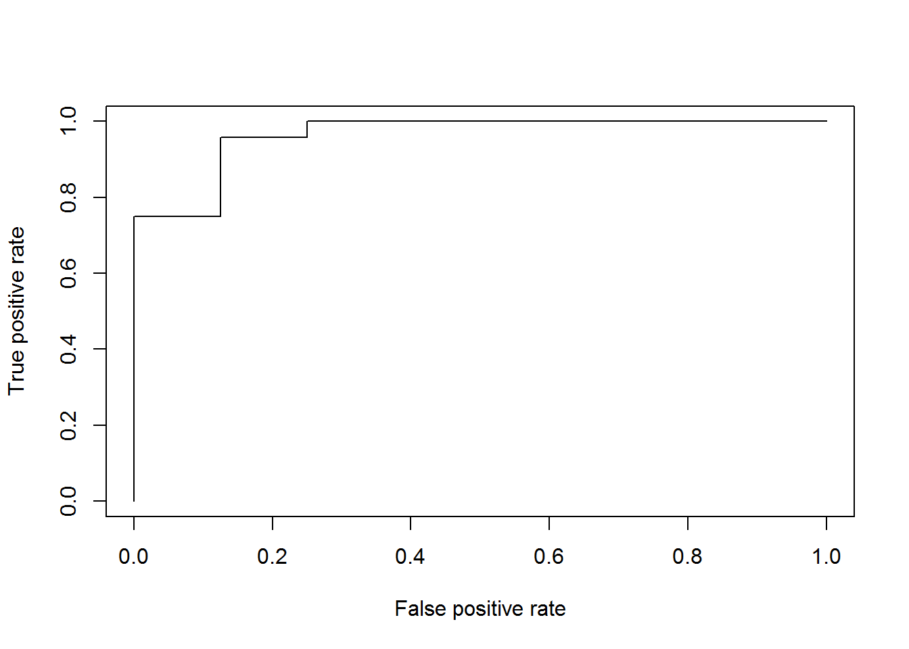

Рассмотрим данные parkinsons. Данные и описание в архиве, кратко суть. Есть идея использовать записи речи для диагностики болезни Паркинсона. Для каждого пациента сделано несколько записей, записи обработаны и из каждой получено несколько фич. Нужно научиться по ним предсказывать, болен ли пациент.
<<здесь идёт стандартный код для классификации из Rcourse.pdf>>
df <- read.csv("parkinsons.csv", comment.char = "#")
#LDA иначе будет неправ.
df$MDVP.Jitter.Abs. <- df$MDVP.Jitter.Abs. * 1000
df.anon <- subset(df, select = -name)Начнём с изучения корреляции между признаками.
levelplot(cor(df.anon), par.settings = list(regions = list(col = colorRampPalette(grey(1:0)))), scales = list(x = list(rot = 90)), xlab = "", ylab = "")
NHR и HNR интересные признаки, которые почти ни с чем не коррелируют.
Добавим факторы в оба датасета:
df.anon$status <- factor(df.anon$status, labels=c("Healthy", "Sick"))
df$status <- factor(df$status, labels=c("Healthy", "Sick"))Для начала попробуем использовать:
m.lda <- tune(lda, status ~ ., data = df.anon, predict.func = simple.predict.da, tunecontrol = tune.control(sampling = "cross", cross = 10))
m.multinom <- tune(multinom, status ~ ., data = df.anon, trace = F)
m.bayes <- tune(naiveBayes, status ~ ., data = df.anon)
m.lda$performances## dummyparameter error dispersion
## 1 0 0.1226316 0.06333066m.multinom$performances## dummyparameter error dispersion
## 1 0 0.1792105 0.08033335m.bayes$performances## dummyparameter error dispersion
## 1 0 0.3026316 0.1140891AIC поможет улучшить модель, возможно.
m.multinom1 <- multinom(status ~ ., data = df.anon, trace = FALSE)
summary(m.multinom1)## Call:
## multinom(formula = status ~ ., data = df.anon, trace = FALSE)
##
## Coefficients:
## Values Std. Err.
## (Intercept) -5.342918864 1.667610618
## MDVP.Fo.Hz. -0.013557603 0.010665435
## MDVP.Fhi.Hz. -0.003871387 0.003160267
## MDVP.Flo.Hz. 0.001499748 0.008243593
## MDVP.Jitter... -5.141319625 0.037555467
## MDVP.Jitter.Abs. -86.646561570 0.273190439
## MDVP.RAP 21.919351971 0.025979524
## MDVP.PPQ -0.611497960 0.021536522
## Jitter.DDP 65.707951132 0.077930815
## MDVP.Shimmer 7.158945352 0.444370717
## MDVP.Shimmer.dB. 22.282447382 4.054004115
## Shimmer.APQ3 -28.738342421 0.274014976
## Shimmer.APQ5 5.248006205 0.186748886
## MDVP.APQ 71.170946443 0.268024572
## Shimmer.DDA -86.274877914 0.821985752
## NHR 25.468766821 0.288404327
## HNR 0.152112699 0.139340775
## RPDE -1.887880110 3.035681757
## DFA 6.015582320 3.542961641
## spread1 1.145627835 0.564924605
## spread2 5.467145992 4.468650002
## D2 1.891677102 1.019128236
## PPE 19.934339282 1.329815579
##
## Residual Deviance: 105.517
## AIC: 151.517m.multinom1.opt <- stepAIC(m.multinom1)## Start: AIC=151.52
## status ~ MDVP.Fo.Hz. + MDVP.Fhi.Hz. + MDVP.Flo.Hz. + MDVP.Jitter... +
## MDVP.Jitter.Abs. + MDVP.RAP + MDVP.PPQ + Jitter.DDP + MDVP.Shimmer +
## MDVP.Shimmer.dB. + Shimmer.APQ3 + Shimmer.APQ5 + MDVP.APQ +
## Shimmer.DDA + NHR + HNR + RPDE + DFA + spread1 + spread2 +
## D2 + PPE
##
## Df AIC
## - NHR 1 147.64
## - DFA 1 149.18
## - MDVP.Flo.Hz. 1 149.27
## - Shimmer.APQ5 1 149.55
## - MDVP.PPQ 1 149.57
## - MDVP.Jitter... 1 149.57
## - Shimmer.APQ3 1 149.58
## - MDVP.Shimmer.dB. 1 149.59
## - MDVP.Shimmer 1 149.59
## - PPE 1 149.63
## - MDVP.RAP 1 149.73
## - HNR 1 150.11
## - RPDE 1 150.13
## - MDVP.Fo.Hz. 1 150.17
## - spread2 1 150.25
## - MDVP.APQ 1 150.51
## - Shimmer.DDA 1 150.61
## - MDVP.Fhi.Hz. 1 150.85
## - MDVP.Jitter.Abs. 1 150.89
## - Jitter.DDP 1 150.99
## - spread1 1 151.36
## <none> 151.52
## - D2 1 151.97
##
## Step: AIC=147.64
## status ~ MDVP.Fo.Hz. + MDVP.Fhi.Hz. + MDVP.Flo.Hz. + MDVP.Jitter... +
## MDVP.Jitter.Abs. + MDVP.RAP + MDVP.PPQ + Jitter.DDP + MDVP.Shimmer +
## MDVP.Shimmer.dB. + Shimmer.APQ3 + Shimmer.APQ5 + MDVP.APQ +
## Shimmer.DDA + HNR + RPDE + DFA + spread1 + spread2 + D2 +
## PPE
##
## Df AIC
## - MDVP.Shimmer.dB. 1 144.38
## - DFA 1 145.73
## - HNR 1 146.65
## - MDVP.Flo.Hz. 1 146.76
## - MDVP.Fhi.Hz. 1 147.17
## - MDVP.Fo.Hz. 1 147.41
## - spread2 1 147.47
## - spread1 1 147.57
## - Shimmer.DDA 1 147.61
## <none> 147.64
## - PPE 1 147.96
## - Shimmer.APQ3 1 148.03
## - Shimmer.APQ5 1 148.07
## - MDVP.Jitter... 1 148.07
## - MDVP.PPQ 1 148.07
## - MDVP.Shimmer 1 148.09
## - MDVP.RAP 1 148.16
## - D2 1 148.55
## - MDVP.APQ 1 148.66
## - Jitter.DDP 1 149.05
## - MDVP.Jitter.Abs. 1 151.30
## - RPDE 1 151.38
##
## Step: AIC=144.38
## status ~ MDVP.Fo.Hz. + MDVP.Fhi.Hz. + MDVP.Flo.Hz. + MDVP.Jitter... +
## MDVP.Jitter.Abs. + MDVP.RAP + MDVP.PPQ + Jitter.DDP + MDVP.Shimmer +
## Shimmer.APQ3 + Shimmer.APQ5 + MDVP.APQ + Shimmer.DDA + HNR +
## RPDE + DFA + spread1 + spread2 + D2 + PPE
##
## Df AIC
## - Shimmer.APQ5 1 141.15
## - Shimmer.APQ3 1 141.56
## - MDVP.PPQ 1 141.66
## - MDVP.Shimmer 1 141.67
## - MDVP.Jitter... 1 141.70
## - MDVP.Flo.Hz. 1 141.76
## - RPDE 1 141.97
## - MDVP.RAP 1 142.01
## - PPE 1 142.28
## - DFA 1 142.32
## - MDVP.APQ 1 142.88
## - MDVP.Fhi.Hz. 1 143.08
## - spread2 1 144.04
## - MDVP.Fo.Hz. 1 144.14
## <none> 144.38
## - spread1 1 144.71
## - D2 1 145.00
## - Jitter.DDP 1 145.52
## - HNR 1 146.17
## - MDVP.Jitter.Abs. 1 146.25
## - Shimmer.DDA 1 148.84
##
## Step: AIC=141.15
## status ~ MDVP.Fo.Hz. + MDVP.Fhi.Hz. + MDVP.Flo.Hz. + MDVP.Jitter... +
## MDVP.Jitter.Abs. + MDVP.RAP + MDVP.PPQ + Jitter.DDP + MDVP.Shimmer +
## Shimmer.APQ3 + MDVP.APQ + Shimmer.DDA + HNR + RPDE + DFA +
## spread1 + spread2 + D2 + PPE
##
## Df AIC
## - DFA 1 139.00
## - MDVP.Flo.Hz. 1 139.79
## <none> 141.15
## - MDVP.Fo.Hz. 1 141.55
## - MDVP.Fhi.Hz. 1 141.73
## - RPDE 1 142.01
## - HNR 1 142.03
## - spread2 1 142.59
## - Shimmer.DDA 1 143.18
## - PPE 1 144.06
## - MDVP.PPQ 1 144.50
## - MDVP.Jitter... 1 144.57
## - MDVP.RAP 1 144.65
## - Shimmer.APQ3 1 144.66
## - D2 1 144.75
## - MDVP.Shimmer 1 145.17
## - Jitter.DDP 1 145.94
## - MDVP.Jitter.Abs. 1 146.73
## - MDVP.APQ 1 147.01
## - spread1 1 147.48
##
## Step: AIC=139
## status ~ MDVP.Fo.Hz. + MDVP.Fhi.Hz. + MDVP.Flo.Hz. + MDVP.Jitter... +
## MDVP.Jitter.Abs. + MDVP.RAP + MDVP.PPQ + Jitter.DDP + MDVP.Shimmer +
## Shimmer.APQ3 + MDVP.APQ + Shimmer.DDA + HNR + RPDE + spread1 +
## spread2 + D2 + PPE
##
## Df AIC
## - MDVP.Shimmer 1 137.58
## - MDVP.Flo.Hz. 1 138.20
## - HNR 1 138.92
## <none> 139.00
## - Shimmer.APQ3 1 139.24
## - PPE 1 139.56
## - MDVP.PPQ 1 140.38
## - MDVP.Jitter... 1 140.53
## - MDVP.RAP 1 140.75
## - RPDE 1 141.04
## - MDVP.Fo.Hz. 1 141.49
## - spread2 1 142.17
## - Jitter.DDP 1 143.54
## - MDVP.APQ 1 143.69
## - MDVP.Fhi.Hz. 1 143.97
## - spread1 1 144.15
## - D2 1 144.28
## - MDVP.Jitter.Abs. 1 144.56
## - Shimmer.DDA 1 144.96
##
## Step: AIC=137.58
## status ~ MDVP.Fo.Hz. + MDVP.Fhi.Hz. + MDVP.Flo.Hz. + MDVP.Jitter... +
## MDVP.Jitter.Abs. + MDVP.RAP + MDVP.PPQ + Jitter.DDP + Shimmer.APQ3 +
## MDVP.APQ + Shimmer.DDA + HNR + RPDE + spread1 + spread2 +
## D2 + PPE
##
## Df AIC
## - Shimmer.APQ3 1 135.06
## - PPE 1 135.76
## - MDVP.Flo.Hz. 1 136.23
## - MDVP.PPQ 1 136.24
## - RPDE 1 136.27
## - MDVP.Jitter... 1 136.43
## - MDVP.RAP 1 136.69
## - MDVP.Fhi.Hz. 1 137.45
## <none> 137.58
## - spread2 1 137.82
## - D2 1 138.24
## - MDVP.Fo.Hz. 1 139.47
## - MDVP.Jitter.Abs. 1 140.25
## - Jitter.DDP 1 140.66
## - HNR 1 141.90
## - MDVP.APQ 1 141.94
## - spread1 1 143.35
## - Shimmer.DDA 1 143.51
##
## Step: AIC=135.06
## status ~ MDVP.Fo.Hz. + MDVP.Fhi.Hz. + MDVP.Flo.Hz. + MDVP.Jitter... +
## MDVP.Jitter.Abs. + MDVP.RAP + MDVP.PPQ + Jitter.DDP + MDVP.APQ +
## Shimmer.DDA + HNR + RPDE + spread1 + spread2 + D2 + PPE
##
## Df AIC
## - MDVP.Flo.Hz. 1 133.13
## - RPDE 1 134.97
## <none> 135.06
## - MDVP.Fo.Hz. 1 135.99
## - spread2 1 136.18
## - MDVP.Fhi.Hz. 1 136.83
## - Shimmer.DDA 1 137.84
## - D2 1 137.95
## - MDVP.PPQ 1 138.12
## - MDVP.Jitter... 1 138.19
## - MDVP.RAP 1 138.32
## - MDVP.Jitter.Abs. 1 139.60
## - HNR 1 139.61
## - Jitter.DDP 1 140.07
## - PPE 1 141.00
## - MDVP.APQ 1 141.43
## - spread1 1 142.70
##
## Step: AIC=133.13
## status ~ MDVP.Fo.Hz. + MDVP.Fhi.Hz. + MDVP.Jitter... + MDVP.Jitter.Abs. +
## MDVP.RAP + MDVP.PPQ + Jitter.DDP + MDVP.APQ + Shimmer.DDA +
## HNR + RPDE + spread1 + spread2 + D2 + PPE
##
## Df AIC
## <none> 133.13
## - RPDE 1 133.25
## - spread2 1 133.88
## - MDVP.Fo.Hz. 1 134.94
## - D2 1 135.10
## - MDVP.Fhi.Hz. 1 135.48
## - Shimmer.DDA 1 136.98
## - MDVP.Jitter... 1 137.90
## - MDVP.RAP 1 137.99
## - PPE 1 138.00
## - MDVP.PPQ 1 138.05
## - Jitter.DDP 1 138.96
## - HNR 1 139.46
## - MDVP.Jitter.Abs. 1 140.04
## - MDVP.APQ 1 140.25
## - spread1 1 140.79Сравним, что получилось?
formula.aic <- m.multinom1.opt$call$formula
m.lda.opt <- tune(lda, formula.aic, data = df.anon, predict.func = simple.predict.da, tunecontrol = tune.control(sampling = "cross", cross = 10))
m.multinom.opt <- tune(multinom, formula.aic, data = df.anon, trace = FALSE)
m.bayes.opt <- tune(naiveBayes, formula.aic, data = df.anon)
m.lda.opt$performances## dummyparameter error dispersion
## 1 0 0.08710526 0.05914974m.multinom.opt$performances## dummyparameter error dispersion
## 1 0 0.1484211 0.06891634m.bayes.opt$performances## dummyparameter error dispersion
## 1 0 0.2734211 0.1415271Ошибка уменьшилась, отлично. Модель, правда, некрасивая, а судя по черным пятнам в графике корреляций можно многое удалить. Составим новую модель и протестируем:
formula.nocorr <- update(formula.aic, . ~ . - MDVP.Jitter.Abs - MDVP.RAP - MDVP.PPQ - MDVP.APQ)
formula.nocorr## status ~ MDVP.Fo.Hz. + MDVP.Fhi.Hz. + MDVP.Jitter... + MDVP.Jitter.Abs. +
## Jitter.DDP + Shimmer.DDA + HNR + RPDE + spread1 + spread2 +
## D2 + PPEtune(lda, formula.nocorr, data = df.anon, predict.func = simple.predict.da, tunecontrol = tune.control(sampling = "cross", cross = 10))$performances## dummyparameter error dispersion
## 1 0 0.1076316 0.06601074tune(multinom, formula.nocorr, data = df.anon, trace = F)$performances## dummyparameter error dispersion
## 1 0 0.1644737 0.0904679tune(naiveBayes, formula.nocorr , data = df.anon)$performances## dummyparameter error dispersion
## 1 0 0.2315789 0.1023576Мы немного улучшились и сильно упростили модель.
df$name <- sapply(df$name, function(x) {x = as.character(x); substr(x, 1, nchar(x) - 2)})
patients <- aggregate(subset(df, select = c(-name, -status)), list(df$name, df$status), mean)
names(patients)[2] <- "status"
patients<- subset(patients, select = -c(Group.1))
patients$status <- factor(patients$status, labels = c("Healthy", "Sick"))
contrasts(patients$status)## Sick
## Healthy 0
## Sick 1head(patients)## status MDVP.Fo.Hz. MDVP.Fhi.Hz. MDVP.Flo.Hz. MDVP.Jitter...
## 1 Healthy 200.2668 210.8843 194.3662 0.002163333
## 2 Healthy 243.8143 254.2805 222.1150 0.002390000
## 3 Healthy 125.5463 134.3132 116.8988 0.004595000
## 4 Healthy 223.6578 239.0345 161.9215 0.002585000
## 5 Healthy 236.0813 248.0438 186.4072 0.004483333
## 6 Healthy 114.2955 126.6712 103.3823 0.003485000
## MDVP.Jitter.Abs. MDVP.RAP MDVP.PPQ Jitter.DDP MDVP.Shimmer
## 1 0.009666667 0.001175000 0.001281667 0.003523333 0.01080333
## 2 0.009166667 0.001285000 0.001486667 0.003850000 0.01530833
## 3 0.035000000 0.001445000 0.001738333 0.004335000 0.02051000
## 4 0.009833333 0.001463333 0.001425000 0.004393333 0.01709333
## 5 0.018333333 0.002695000 0.002443333 0.008088333 0.01968667
## 6 0.030000000 0.001686667 0.002038333 0.005063333 0.01533167
## MDVP.Shimmer.dB. Shimmer.APQ3 Shimmer.APQ5 MDVP.APQ Shimmer.DDA
## 1 0.09566667 0.005383333 0.006870000 0.00819500 0.01614833
## 2 0.13700000 0.008641667 0.009243333 0.01073333 0.02592167
## 3 0.18616667 0.011480000 0.009753333 0.01626000 0.03444167
## 4 0.15133333 0.009080000 0.011423333 0.01225167 0.02724667
## 5 0.18533333 0.011385000 0.011645000 0.01318000 0.03415833
## 6 0.13866667 0.007888333 0.009428333 0.01225833 0.02366667
## NHR HNR RPDE DFA spread1 spread2 D2
## 1 0.001495000 30.99217 0.3955782 0.7414823 -7.589537 0.17304883 1.795701
## 2 0.005421667 24.61467 0.4517002 0.6382515 -7.105562 0.12985333 2.298464
## 3 0.005365000 24.73650 0.5098453 0.7626573 -6.695058 0.26135183 2.100401
## 4 0.004305000 25.74567 0.3322472 0.6830467 -7.226125 0.05517583 2.280148
## 5 0.009023333 21.94283 0.4271092 0.6502002 -6.927176 0.15298583 2.202247
## 6 0.004581667 26.18767 0.3862238 0.7634228 -6.058138 0.18998367 1.964580
## PPE
## 1 0.06811333
## 2 0.09839017
## 3 0.12318200
## 4 0.09365933
## 5 0.11447050
## 6 0.17263650Повторим похожие действия:
mp.multinom <- multinom(status ~ ., data = patients, trace = F)
summary(mp.multinom)## Call:
## multinom(formula = status ~ ., data = patients, trace = F)
##
## Coefficients:
## Values Std. Err.
## (Intercept) -375.317056 172.176216
## MDVP.Fo.Hz. 3.511944 5.908589
## MDVP.Fhi.Hz. -1.919848 2.980581
## MDVP.Flo.Hz. -1.137858 3.588768
## MDVP.Jitter... -22.406481 2.522634
## MDVP.Jitter.Abs. -178.177848 21.509116
## MDVP.RAP -8.237077 1.735084
## MDVP.PPQ -11.784481 1.709097
## Jitter.DDP -24.697848 5.202409
## MDVP.Shimmer 131.423334 11.231580
## MDVP.Shimmer.dB. 1206.565011 95.054996
## Shimmer.APQ3 62.456082 6.439869
## Shimmer.APQ5 66.764713 7.432836
## MDVP.APQ 139.355036 9.017946
## Shimmer.DDA 187.161273 19.320123
## NHR -266.592788 12.348564
## HNR 48.092204 43.861213
## RPDE 491.064906 277.685193
## DFA -707.082002 183.386294
## spread1 199.662723 130.853788
## spread2 160.851632 17.328122
## D2 236.260968 334.011940
## PPE -223.698231 114.971435
##
## Residual Deviance: 0.0006485087
## AIC: 46.00065stepAIC(mp.multinom)## Start: AIC=46
## status ~ MDVP.Fo.Hz. + MDVP.Fhi.Hz. + MDVP.Flo.Hz. + MDVP.Jitter... +
## MDVP.Jitter.Abs. + MDVP.RAP + MDVP.PPQ + Jitter.DDP + MDVP.Shimmer +
## MDVP.Shimmer.dB. + Shimmer.APQ3 + Shimmer.APQ5 + MDVP.APQ +
## Shimmer.DDA + NHR + HNR + RPDE + DFA + spread1 + spread2 +
## D2 + PPE
##
## Df AIC
## - PPE 1 44.000
## - MDVP.Shimmer.dB. 1 44.001
## - MDVP.Flo.Hz. 1 44.001
## - spread2 1 44.003
## - MDVP.RAP 1 44.003
## - MDVP.PPQ 1 44.003
## - MDVP.Jitter... 1 44.003
## - Shimmer.APQ5 1 44.003
## - Jitter.DDP 1 44.003
## - Shimmer.APQ3 1 44.003
## - MDVP.APQ 1 44.003
## - MDVP.Shimmer 1 44.003
## - Shimmer.DDA 1 44.003
## - MDVP.Jitter.Abs. 1 44.003
## - NHR 1 44.003
## - DFA 1 44.026
## - RPDE 1 44.096
## - spread1 1 44.597
## <none> 46.001
## - MDVP.Fo.Hz. 1 46.010
## - HNR 1 46.464
## - MDVP.Fhi.Hz. 1 50.697
## - D2 1 52.613
##
## Step: AIC=44
## status ~ MDVP.Fo.Hz. + MDVP.Fhi.Hz. + MDVP.Flo.Hz. + MDVP.Jitter... +
## MDVP.Jitter.Abs. + MDVP.RAP + MDVP.PPQ + Jitter.DDP + MDVP.Shimmer +
## MDVP.Shimmer.dB. + Shimmer.APQ3 + Shimmer.APQ5 + MDVP.APQ +
## Shimmer.DDA + NHR + HNR + RPDE + DFA + spread1 + spread2 +
## D2
##
## Df AIC
## - MDVP.Jitter.Abs. 1 42.000
## - NHR 1 42.000
## - Shimmer.DDA 1 42.001
## - MDVP.Jitter... 1 42.001
## - MDVP.PPQ 1 42.001
## - MDVP.RAP 1 42.001
## - MDVP.Shimmer 1 42.001
## - Jitter.DDP 1 42.001
## - Shimmer.APQ3 1 42.001
## - MDVP.APQ 1 42.002
## - spread2 1 42.002
## - Shimmer.APQ5 1 42.002
## - MDVP.Flo.Hz. 1 42.007
## - MDVP.Shimmer.dB. 1 42.018
## - DFA 1 42.359
## - RPDE 1 42.722
## - MDVP.Fo.Hz. 1 42.766
## <none> 44.000
## - HNR 1 48.010
## - MDVP.Fhi.Hz. 1 49.081
## - spread1 1 50.343
## - D2 1 50.868
##
## Step: AIC=42
## status ~ MDVP.Fo.Hz. + MDVP.Fhi.Hz. + MDVP.Flo.Hz. + MDVP.Jitter... +
## MDVP.RAP + MDVP.PPQ + Jitter.DDP + MDVP.Shimmer + MDVP.Shimmer.dB. +
## Shimmer.APQ3 + Shimmer.APQ5 + MDVP.APQ + Shimmer.DDA + NHR +
## HNR + RPDE + DFA + spread1 + spread2 + D2
##
## Df AIC
## - MDVP.Shimmer 1 40.007
## - Shimmer.DDA 1 40.007
## - NHR 1 40.008
## - spread2 1 40.008
## - MDVP.APQ 1 40.008
## - Shimmer.APQ3 1 40.008
## - Shimmer.APQ5 1 40.008
## - Jitter.DDP 1 40.009
## - MDVP.Jitter... 1 40.009
## - MDVP.PPQ 1 40.009
## - MDVP.RAP 1 40.009
## - MDVP.Fo.Hz. 1 40.032
## - MDVP.Flo.Hz. 1 40.033
## - RPDE 1 40.063
## - MDVP.Shimmer.dB. 1 40.135
## - MDVP.Fhi.Hz. 1 40.565
## <none> 42.000
## - DFA 1 42.004
## - HNR 1 47.642
## - D2 1 49.313
## - spread1 1 51.764
##
## Step: AIC=40.01
## status ~ MDVP.Fo.Hz. + MDVP.Fhi.Hz. + MDVP.Flo.Hz. + MDVP.Jitter... +
## MDVP.RAP + MDVP.PPQ + Jitter.DDP + MDVP.Shimmer.dB. + Shimmer.APQ3 +
## Shimmer.APQ5 + MDVP.APQ + Shimmer.DDA + NHR + HNR + RPDE +
## DFA + spread1 + spread2 + D2
##
## Df AIC
## - RPDE 1 38.018
## - MDVP.Fo.Hz. 1 38.054
## - MDVP.Flo.Hz. 1 38.145
## - MDVP.RAP 1 38.210
## - NHR 1 38.349
## - spread2 1 38.350
## - MDVP.PPQ 1 38.411
## - MDVP.Jitter... 1 38.457
## - Shimmer.APQ5 1 38.459
## - Jitter.DDP 1 38.465
## - Shimmer.APQ3 1 38.471
## - Shimmer.DDA 1 38.475
## - MDVP.APQ 1 38.522
## - MDVP.Shimmer.dB. 1 38.769
## - DFA 1 39.856
## <none> 40.007
## - MDVP.Fhi.Hz. 1 44.149
## - HNR 1 46.099
## - D2 1 47.266
## - spread1 1 50.166
##
## Step: AIC=38.02
## status ~ MDVP.Fo.Hz. + MDVP.Fhi.Hz. + MDVP.Flo.Hz. + MDVP.Jitter... +
## MDVP.RAP + MDVP.PPQ + Jitter.DDP + MDVP.Shimmer.dB. + Shimmer.APQ3 +
## Shimmer.APQ5 + MDVP.APQ + Shimmer.DDA + NHR + HNR + DFA +
## spread1 + spread2 + D2
##
## Df AIC
## - spread2 1 36.008
## - MDVP.Shimmer.dB. 1 36.057
## - MDVP.APQ 1 36.122
## - DFA 1 36.138
## - MDVP.Jitter... 1 36.140
## - MDVP.PPQ 1 36.140
## - MDVP.RAP 1 36.140
## - Jitter.DDP 1 36.141
## - Shimmer.APQ3 1 36.141
## - Shimmer.APQ5 1 36.149
## - Shimmer.DDA 1 36.155
## - MDVP.Fo.Hz. 1 36.396
## - NHR 1 37.490
## <none> 38.018
## - MDVP.Flo.Hz. 1 41.585
## - HNR 1 43.198
## - MDVP.Fhi.Hz. 1 44.389
## - D2 1 45.177
## - spread1 1 48.439
##
## Step: AIC=36.01
## status ~ MDVP.Fo.Hz. + MDVP.Fhi.Hz. + MDVP.Flo.Hz. + MDVP.Jitter... +
## MDVP.RAP + MDVP.PPQ + Jitter.DDP + MDVP.Shimmer.dB. + Shimmer.APQ3 +
## Shimmer.APQ5 + MDVP.APQ + Shimmer.DDA + NHR + HNR + DFA +
## spread1 + D2
##
## Df AIC
## - Shimmer.DDA 1 34.045
## - MDVP.APQ 1 34.054
## - Shimmer.APQ5 1 34.057
## - Shimmer.APQ3 1 34.064
## - NHR 1 34.065
## - Jitter.DDP 1 34.069
## - MDVP.RAP 1 34.070
## - MDVP.PPQ 1 34.070
## - MDVP.Jitter... 1 34.070
## - MDVP.Shimmer.dB. 1 34.151
## - MDVP.Flo.Hz. 1 34.681
## - MDVP.Fo.Hz. 1 35.941
## <none> 36.008
## - DFA 1 40.527
## - HNR 1 40.933
## - MDVP.Fhi.Hz. 1 42.418
## - D2 1 43.920
## - spread1 1 45.592
##
## Step: AIC=34.05
## status ~ MDVP.Fo.Hz. + MDVP.Fhi.Hz. + MDVP.Flo.Hz. + MDVP.Jitter... +
## MDVP.RAP + MDVP.PPQ + Jitter.DDP + MDVP.Shimmer.dB. + Shimmer.APQ3 +
## Shimmer.APQ5 + MDVP.APQ + NHR + HNR + DFA + spread1 + D2
##
## Df AIC
## - MDVP.Flo.Hz. 1 32.029
## - MDVP.APQ 1 32.148
## - MDVP.Jitter... 1 32.299
## - MDVP.RAP 1 32.299
## - MDVP.PPQ 1 32.299
## - Jitter.DDP 1 32.299
## - Shimmer.APQ5 1 32.299
## - Shimmer.APQ3 1 32.300
## - NHR 1 32.315
## - MDVP.Shimmer.dB. 1 32.379
## <none> 34.045
## - MDVP.Fo.Hz. 1 36.164
## - DFA 1 37.050
## - HNR 1 38.142
## - MDVP.Fhi.Hz. 1 40.351
## - D2 1 41.973
## - spread1 1 43.337
##
## Step: AIC=32.03
## status ~ MDVP.Fo.Hz. + MDVP.Fhi.Hz. + MDVP.Jitter... + MDVP.RAP +
## MDVP.PPQ + Jitter.DDP + MDVP.Shimmer.dB. + Shimmer.APQ3 +
## Shimmer.APQ5 + MDVP.APQ + NHR + HNR + DFA + spread1 + D2
##
## Df AIC
## - Shimmer.APQ3 1 30.340
## - Jitter.DDP 1 30.340
## - MDVP.RAP 1 30.340
## - MDVP.PPQ 1 30.340
## - MDVP.Jitter... 1 30.340
## - Shimmer.APQ5 1 30.340
## - MDVP.APQ 1 30.351
## - NHR 1 30.666
## <none> 32.029
## - MDVP.Fo.Hz. 1 35.315
## - MDVP.Shimmer.dB. 1 37.296
## - HNR 1 37.429
## - DFA 1 37.622
## - MDVP.Fhi.Hz. 1 39.000
## - D2 1 40.158
## - spread1 1 42.260
##
## Step: AIC=30.34
## status ~ MDVP.Fo.Hz. + MDVP.Fhi.Hz. + MDVP.Jitter... + MDVP.RAP +
## MDVP.PPQ + Jitter.DDP + MDVP.Shimmer.dB. + Shimmer.APQ5 +
## MDVP.APQ + NHR + HNR + DFA + spread1 + D2
##
## Df AIC
## - MDVP.APQ 1 28.826
## - Shimmer.APQ5 1 29.242
## - MDVP.RAP 1 29.540
## - MDVP.PPQ 1 29.541
## - MDVP.Jitter... 1 29.566
## - Jitter.DDP 1 29.604
## <none> 30.340
## - NHR 1 30.912
## - MDVP.Fo.Hz. 1 33.270
## - MDVP.Shimmer.dB. 1 35.487
## - DFA 1 35.694
## - HNR 1 36.995
## - MDVP.Fhi.Hz. 1 37.388
## - D2 1 38.216
## - spread1 1 40.518
##
## Step: AIC=28.83
## status ~ MDVP.Fo.Hz. + MDVP.Fhi.Hz. + MDVP.Jitter... + MDVP.RAP +
## MDVP.PPQ + Jitter.DDP + MDVP.Shimmer.dB. + Shimmer.APQ5 +
## NHR + HNR + DFA + spread1 + D2
##
## Df AIC
## - MDVP.Fo.Hz. 1 28.610
## <none> 28.826
## - Jitter.DDP 1 31.107
## - MDVP.RAP 1 31.107
## - MDVP.PPQ 1 31.107
## - MDVP.Jitter... 1 31.108
## - Shimmer.APQ5 1 31.110
## - NHR 1 31.771
## - HNR 1 32.282
## - DFA 1 34.027
## - MDVP.Shimmer.dB. 1 34.103
## - MDVP.Fhi.Hz. 1 35.511
## - D2 1 36.306
## - spread1 1 38.432
##
## Step: AIC=28.61
## status ~ MDVP.Fhi.Hz. + MDVP.Jitter... + MDVP.RAP + MDVP.PPQ +
## Jitter.DDP + MDVP.Shimmer.dB. + Shimmer.APQ5 + NHR + HNR +
## DFA + spread1 + D2
##
## Df AIC
## - Jitter.DDP 1 27.757
## - MDVP.Jitter... 1 28.128
## - MDVP.RAP 1 28.140
## - MDVP.PPQ 1 28.140
## <none> 28.610
## - Shimmer.APQ5 1 28.732
## - HNR 1 31.733
## - MDVP.Shimmer.dB. 1 32.297
## - DFA 1 32.599
## - MDVP.Fhi.Hz. 1 33.036
## - NHR 1 33.205
## - spread1 1 37.014
## - D2 1 37.729
##
## Step: AIC=27.76
## status ~ MDVP.Fhi.Hz. + MDVP.Jitter... + MDVP.RAP + MDVP.PPQ +
## MDVP.Shimmer.dB. + Shimmer.APQ5 + NHR + HNR + DFA + spread1 +
## D2
##
## Df AIC
## <none> 27.757
## - Shimmer.APQ5 1 28.071
## - MDVP.Jitter... 1 28.316
## - MDVP.PPQ 1 28.331
## - MDVP.RAP 1 28.332
## - HNR 1 29.619
## - MDVP.Shimmer.dB. 1 30.791
## - DFA 1 30.949
## - NHR 1 31.238
## - MDVP.Fhi.Hz. 1 31.365
## - D2 1 35.770
## - spread1 1 37.627## Call:
## multinom(formula = status ~ MDVP.Fhi.Hz. + MDVP.Jitter... + MDVP.RAP +
## MDVP.PPQ + MDVP.Shimmer.dB. + Shimmer.APQ5 + NHR + HNR +
## DFA + spread1 + D2, data = patients, trace = F)
##
## Coefficients:
## (Intercept) MDVP.Fhi.Hz. MDVP.Jitter... MDVP.RAP
## 71.60392064 -0.08198481 -17.11172622 4.55783542
## MDVP.PPQ MDVP.Shimmer.dB. Shimmer.APQ5 NHR
## -2.16347999 151.45116684 29.69793684 -322.27799254
## HNR DFA spread1 D2
## 2.41733220 -148.11035459 13.25191366 24.80352760
##
## Residual Deviance: 3.756674
## AIC: 27.75667Вновь удалим коррелирующие элементы.
formula.p <- status ~ MDVP.Fhi.Hz. + HNR + DFA + spread1 + D2
mp.multinom.opt <- tune(multinom, formula.p, data = patients, trace = F)
mp.lda.opt <- tune(lda, formula.p, data = patients, predict.func = simple.predict.da, tunecontrol = tune.control(sampling = "cross", cross = 10))
mp.bayes.opt <- tune(naiveBayes, formula.p, data = patients)
mp.lda.opt$performances## dummyparameter error dispersion
## 1 0 0.09166667 0.1493298mp.bayes.opt$performances## dummyparameter error dispersion
## 1 0 0.2333333 0.2249829mp.multinom.opt$performances## dummyparameter error dispersion
## 1 0 0.1916667 0.2292298Ну и наконец (выбрав лучшую модель):
df = subset(df, select = c(status, MDVP.Fhi.Hz., HNR, DFA, spread1, D2))
table(predicted = predict(mp.lda.opt$best.model, patients)$class, actual = patients$status)## actual
## predicted Healthy Sick
## Healthy 6 1
## Sick 2 23roc <- ROC(predicted = predict(mp.lda.opt$best.model, patients)$x, actual = patients$status)
plot(roc)
AUC(predicted = predict(mp.lda.opt$best.model, patients)$x, actual = patients$status)## [1] 0.9635417